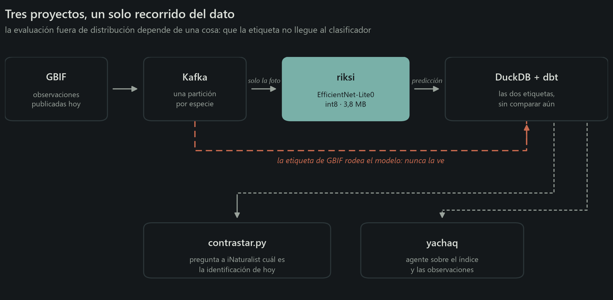
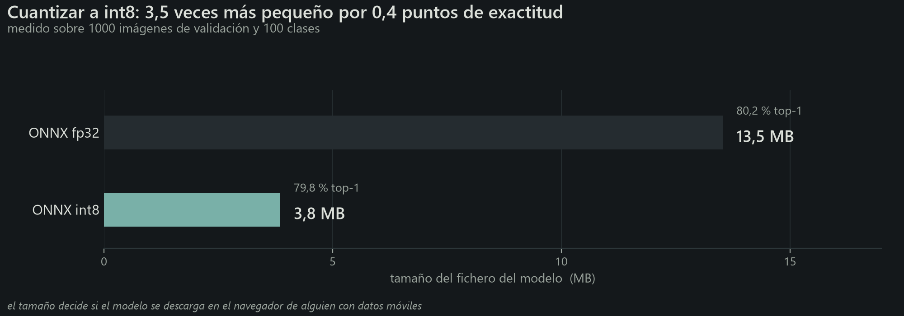
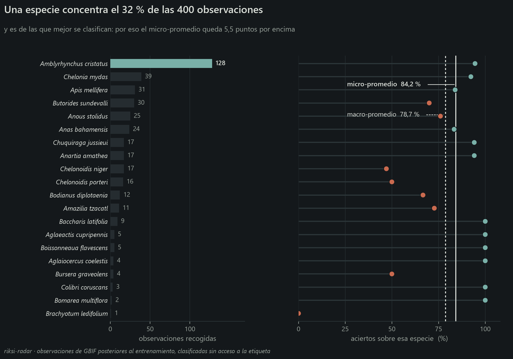
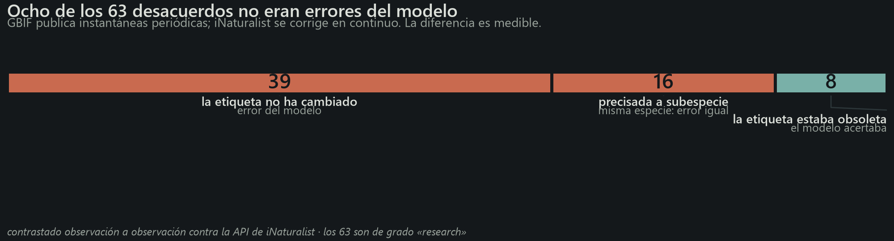
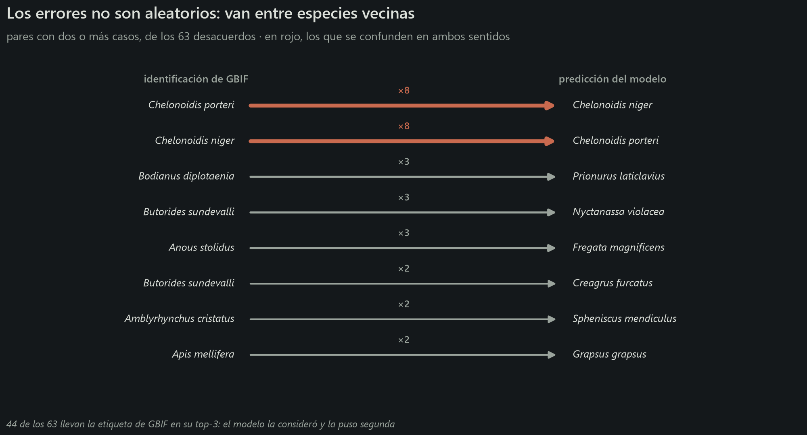
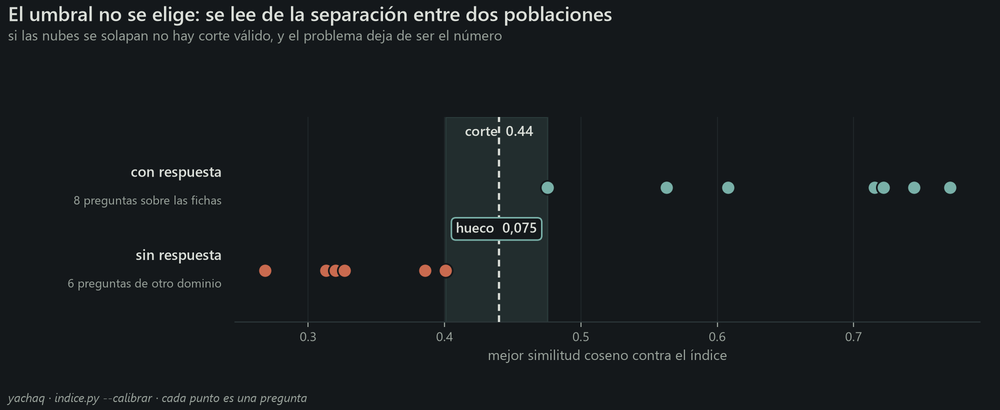
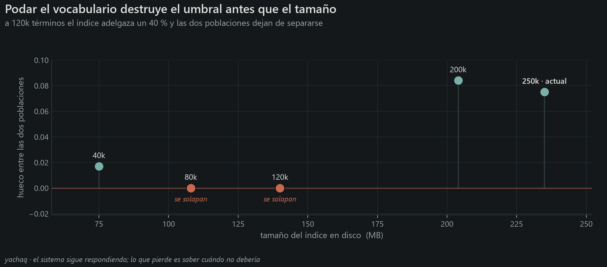
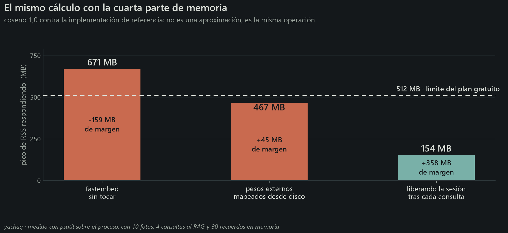

Riksi
Abrir la cámara
Riksi
Abrir la cámara
Sesgo de muestreo en la evaluación fuera de distribución de un clasificador de especies: micro frente a macro-promedio sobre datos de ciencia ciudadana
O dicho sin jerga: cuatro cifras que publiqué sobre un clasificador de especies, y qué pasó cuando las medí bien.
Un clasificador de cien especies evaluado sobre 400 observaciones que nadie seleccionó acierta el 84,2 % de las veces. Dando el mismo peso a cada especie en vez de a cada fotografía, el 78,7 %. Esos 5,5 puntos no son el modelo: son que una sola especie aporta un tercio del conjunto. Es una de las cuatro cifras que publiqué antes de medirlas bien.
Diego Fernando Lojan Tenesaca · Data & AI Engineer · 15 min de lectura
Entrené un clasificador de cien especies ecuatorianas, monté un pipeline para evaluarlo sobre observaciones que nadie había seleccionado y construí un agente sobre ambos. Tres repositorios, unos tres meses.
Lo que sigue no es cómo los construí. Es el patrón que encontré al revisarlos: cada vez que sustituí una estimación cómoda por una medición correcta, el número empeoró. Cuatro veces. En las cuatro, la cifra original era defendible, estaba publicada, y describía algo distinto de lo que yo creía.
La asimetría tiene una explicación mecánica. Una métrica que sale mal te empuja a revisar el cálculo; una que sale bien se publica. El resultado es que el error solo sobrevive en una dirección, y no en la inocua.
El montaje
Lo mínimo para seguir el resto:
| riksi | EfficientNet-Lite0, cien clases, 3,8 MB en int8. Inferencia en el navegador sobre ONNX Runtime Web |
| riksi-radar | Kafka → clasificador → DuckDB → dbt. Consume observaciones de GBIF y las clasifica sin acceso a la etiqueta |
| yachaq | Agente sobre ambos: recuperación, memoria persistente, servidor MCP |

El detalle que hace válido el montaje está en la línea roja: la etiqueta de GBIF viaja en paralelo y no entra al clasificador. Se almacenan las dos, se comparan después. Sin esa separación no hay evaluación, hay una consulta.
El modelo obtiene 79,8 % de exactitud top-1 sobre 1000 imágenes de validación. Esa cifra está bien medida y no es ninguna de las cuatro que se caen.
Conviene fijar antes el coste de la cuantización, porque es la única decisión del proyecto que salió gratis:

Cuatro décimas de exactitud por un factor 3,5 en tamaño. Para un modelo que se descarga en el navegador de alguien con datos móviles, la decisión no admite discusión.
Uno · Exactitud fuera de distribución, mal promediada
El conjunto de validación comparte distribución generadora con el de entrenamiento: mismas fuentes, mismos fotógrafos, mismo sesgo de encuadre. Un 79,8 % en esas condiciones acota poco sobre el comportamiento real.
Para medir fuera de esa distribución construí el radar: consume observaciones publicadas en GBIF con posterioridad al entrenamiento, subidas por gente distinta, sin selección previa, y las clasifica sin acceso a la etiqueta.
Sobre 400 observaciones: 337 aciertos. 84,2 %.
Seis puntos por encima del banco de validación. Publiqué ese número con la palabra «sube» en negrita.
La aritmética es correcta. La interpretación no.

El panel izquierdo contiene el problema: Amblyrhynchus cristatus, la iguana marina, aporta 128 de las 400 observaciones. Las tres clases más frecuentes suman la mitad del conjunto, y de las cien clases del modelo solo aparecen veinte.
La ciencia ciudadana no muestrea uniformemente. La gente fotografía lo que ve, y en Galápagos ve iguanas marinas. Ese 84,2 % es, en buena parte, el rendimiento del modelo sobre una clase, repetido 128 veces.
El panel derecho explica la dirección del sesgo: la iguana marina está entre las clases que mejor resuelve (94,5 %). La distribución de evaluación está dominada por un caso fácil, así que el micro-promedio se infla en lugar de hundirse.
Hay dos formas de resumir esos 400 resultados en un número, y no dicen lo mismo:
- micro-promedio: aciertos totales entre observaciones totales. Cada fotografía pesa igual, así que una clase con 128 decide un tercio del resultado ella sola.
- macro-promedio: la exactitud de cada clase por separado, y después la media de esas veinte cifras. Cada clase pesa igual, la que aparece 128 veces y la que aparece una.
| exactitud | |
|---|---|
| micro-promedio (por observación) | 84,2 % |
| macro-promedio (por clase) | 78,7 % |
Si el conjunto estuviera equilibrado —veinte observaciones por clase— los dos números serían casi idénticos. La diferencia mide exactamente cuánto desequilibrio hay.
Son dos consultas que difieren en un group by:
-- micro: cada observación pesa lo mismo
select avg(coincide::int) from observaciones;
-- macro: cada clase pesa lo mismo
select avg(tasa) from (
select especie, avg(coincide::int) as tasa
from observaciones group by especie
);Y aquí está el resultado que importa: 78,7 % fuera de distribución contra 78,0 % en el banco de validación. El modelo no mejora al salir de su reparto. Se comporta igual.
Es una conclusión considerablemente más aburrida y bastante más creíble. «Ausencia de deriva detectable» es un hallazgo. «Mejora en producción» era un artefacto del estimador que elegí.
Sobre datos de ciencia ciudadana, publica el macro-promedio. El micro-promedio describe la distribución marginal de tus clases tanto como el rendimiento de tu modelo, y no distingue una cosa de la otra.
La diferencia de 5,5 puntos no es un tecnicismo: es la magnitud del sesgo de muestreo, expresada en las unidades de la métrica.
Por qué el pipeline lleva Kafka
Objeción razonable: 400 observaciones caben en un CSV.
El caudal real no es 400. GBIF recibe del orden de 130.000 observaciones diarias solo de Ecuador; el 1,6 % cae en las cien clases del modelo, unas 6.000 al día. Las 400 son una ventana para medir, no el flujo.
Dicho eso, lo que aprendí montándolo fue otra cosa. El broker no arrancaba, y el mensaje señalaba al sitio equivocado:
advertised.listeners cannot use the nonroutable meta-address 0.0.0.0Yo ya había sobrescrito advertised.listeners. Tardé cuatro intentos en ver que la queja no era sobre ese, sino sobre el listener del controlador, también en
0.0.0.0, del que Kafka deriva su dirección anunciada cuando no se declara una:
# el determinante es el segundo, no el primero
listeners=PLAINTEXT://0.0.0.0:9092,CONTROLLER://localhost:9093
advertised.listeners=PLAINTEXT://localhost:9092El segundo fallo fue más silencioso. El broker daba el consumidor por muerto. Por omisión entrega 500 registros por poll() y espera el siguiente en cinco minutos. Descargar y clasificar 500 fotos excede ese plazo con holgura, así que el grupo se reequilibraba y el commit fallaba con «the group has already rebalanced», descartando trabajo ya hecho.
consumidor = KafkaConsumer(
TEMA,
max_poll_records=20, # lotes que caben en el intervalo
max_poll_interval_ms=900_000,
enable_auto_commit=False, # confirmar al terminar el lote, no antes
)enable_auto_commit=False es la parte que importa. Con confirmación automática, Kafka marca como procesado lo que todavía estás descargando; si el proceso muere a mitad de lote, esas observaciones no vuelven a entregarse nunca.
Es el patrón general de meter trabajo lento dentro del bucle de un consumidor: no se manifiesta en pruebas cortas y aparece con volumen.
Dos · Desacuerdos que no eran del modelo
Quedaban 63 observaciones donde el clasificador y GBIF discrepaban. Tres explicaciones posibles: error del modelo, observación mal identificada, o la imagen no muestra lo que declara el registro.
Escribí en el README que el pipeline no resuelve cuál de las tres aplica, y que las tortugas de Galápagos que aparecían repetidamente correspondían a «taxonomía en disputa entre biólogos».
Eso último me lo inventé. Sonaba plausible, encajaba, y no lo verifiqué.
Existe una cuarta explicación, y es comprobable: GBIF publica instantáneas periódicas, no un espejo en tiempo real de iNaturalist. Una observación corregida en origen puede seguir en GBIF con la identificación anterior.
La verificación son dos saltos. GBIF conserva el identificador de iNaturalist en
catalogNumber, lo que permite consultar la identificación vigente:
def _en_inaturalist(clave_gbif):
oc = _pedir(f"{GBIF}/occurrence/{clave_gbif}")
id_inat = oc.get("catalogNumber") # el enlace al origen
d = _pedir(f"{INAT}/observations/{id_inat}")
o = d["results"][0]
return {"taxon_hoy": (o.get("taxon") or {}).get("name"),
"grado": o.get("quality_grade"),
"identificaciones": o.get("identifications_count", 0)}El parámetro photo_id de la API de iNaturalist parecía la vía directa. No filtra: devuelve los 382 millones de resultados. Se ignora sin error.
Los 63, dos minutos de peticiones. Veinticuatro tienen hoy otra etiqueta.
Aquí es donde el análisis se podía haber roto, porque no todos los cambios significan lo mismo:
| cambio | interpretación |
|---|---|
Anous stolidus → Anous stolidus galapagensis | refinamiento: se precisó la población; la especie no cambia y el modelo sigue equivocado |
Chelonoidis porteri → Chelonoidis niger porteri | reasignación: el taxón pasa a depender de C. niger |
En el segundo caso el modelo había predicho Chelonoidis niger. Bajo la taxonomía vigente, la predicción es correcta. La tortuga de Santa Cruz pasó a considerarse subespecie de C. niger, y GBIF conservaba la clasificación anterior.
Contar juntos los dos tipos de cambio habría convertido un hallazgo en un autoengaño. Por eso la lógica que clasifica cada caso es la única pieza con pruebas propias:
def _juzgar(caso, hoy):
gbif, dice, ahora = caso["gbif"], caso["modelo"], hoy["taxon_hoy"]
if ahora == gbif: return "sigue igual"
if _es_hijo(ahora, gbif): return "precisada"
if ahora == dice or _es_hijo(ahora, dice): return "el modelo tenía razón"
return "cambió de especie"_es_hijo compara por componentes del nombre, no con startswith, que aceptaría una coincidencia a media palabra:
def _es_hijo(taxon, especie):
partes, base = (taxon or "").split(), (especie or "").split()
return len(partes) > len(base) and partes[:len(base)] == base
assert not _es_hijo("Anous stolidusa", "Anous stolidus")
assert not _es_hijo("Anous stolidus", "Anous stolidus") # ni hija de sí misma
assert _es_hijo("Chelonoidis niger porteri", "Chelonoidis niger")El resultado:

Ocho de 63 no eran errores. Los 63 son de grado research en iNaturalist — identificaciones que la comunidad ya validó—, de modo que los 55 restantes no admiten atenuantes.
Y aun así conviene rebajar el hallazgo. Los ocho pertenecen al mismo taxón. Descontarlos eleva el macro-promedio de 78,7 % a 81,2 %, pero eso corrige una clase de veinte y ninguna otra: es el sesgo del caso anterior reapareciendo por otra vía. La cifra que seguiría publicando es 78,7 %.
Lo que sí deja es un dato reutilizable: el 13 % de los registros que verifiqué tenían la etiqueta desactualizada en GBIF. Quien entrene con datos de GBIF sin contrastar el origen está heredando ese desfase sin saberlo.
Los errores tienen estructura
Un recuento agregado de errores dice cuántos hay. Los pares dicen cuáles, que es lo accionable:

Las dos tortugas se confunden en ambas direcciones, ocho veces en cada una. Eso no es error disperso: es un par de clases que el modelo no separa. El diagnóstico y la corrección son distintos —más ejemplos de ese par, o fusionar las clases— de los que aplicarían a errores independientes.
El resto son pares que comparten hábitat: la iguana marina contra el pingüino de Galápagos, la abeja europea contra el cangrejo rojo. Podría explicar por qué — misma roca, misma postura— pero sería exactamente la clase de racionalización que me costó el caso anterior, así que me limito a dejar constancia del patrón.
Y 44 de los 63 llevan la etiqueta de GBIF en su top-3: el modelo la consideró y la puso segunda. La distancia entre el 78,7 % y un sistema utilizable es más corta de lo que sugiere el número, si la interfaz ofrece tres candidatos en vez de uno.
Tres · Un umbral fijado sin medir
El agente recupera sobre fichas de las cien especies. La pregunta habitual: a partir de qué similitud una ficha recuperada es relevante.
Puse 0,5. Número redondo, sin justificación.
Lo que hay que medir no es la similitud media, sino si las dos poblaciones se separan: preguntas que el corpus puede responder frente a preguntas que no. Si las distribuciones se solapan, ningún umbral funciona, y el problema deja de ser el número.

Se separan, con un hueco de 0,075 entre la peor pregunta respondible y la mejor no respondible. El punto medio cae en 0,44.
buenas = sorted(mejor(p) for p in con_respuesta) # peor primero
malas = sorted((mejor(p) for p in sin_respuesta), reverse=True) # mejor primero
corte = round((buenas[0] + malas[0]) / 2, 2)
if buenas[0] <= malas[0]:
print("SE SOLAPAN: ningún corte las separa.")Las preguntas no respondibles son deliberadamente ajenas al dominio —«¿cuándo se estrenó Blade Runner?», «receta de arroz con leche»—. Si el índice no las rechaza, no rechaza nada, y el umbral es decorativo.
El hallazgo colateral vino de intentar reducir el índice, que ocupaba 235 MB, de los cuales 192 eran la tabla de vocabulario: 250.000 tokens para unos cincuenta idiomas, de los que este proyecto usa 8.403. Parecía peso muerto.

A 120.000 términos el índice adelgaza un 40 % y el umbral deja de existir: no queda separación que partir. Sin medir el hueco, ese recorte parece gratuito. El sistema sigue respondiendo; lo que pierde es la capacidad de no responder, que es lo único que impide a un sistema de recuperación fabricar contexto.
Los identificadores intermedios no eran relleno de otros idiomas: son las subpalabras que sostienen el español. Eliminarlos degrada las preguntas respondibles más que las otras, que es exactamente la dirección equivocada.
Cuatro · 671 MB en un contenedor de 512
Este caso no es de medición, pero es el que más enseñó.
El agente tenía que caber en una capa gratuita: 512 MB. Con fastembed, el proceso alcanzaba 671 MB solo cargando el codificador.

Reescribí la inferencia sobre ONNX Runtime. Dos cambios la resolvieron. El primero, almacenar los pesos como datos externos, lo que hace que onnxruntime los mapee desde disco en vez de copiarlos a memoria:
onnx.save(modelo, str(LIGERO / "modelo.onnx"), save_as_external_data=True, ...)
opciones = ort.SessionOptions()
opciones.enable_cpu_mem_arena = False # sin arena que crece y no devuelve
ort.InferenceSession(ruta, sess_options=opciones)Eso deja el proceso en 457 MB en reposo. Pero el pico respondiendo alcanza 467, y con 45 MB de margen un contenedor de 512 muere al primer pico. Por eso la segunda barra sigue en rojo pese a estar bajo la línea: la magnitud que decide el despliegue es el pico, no el reposo.
El segundo cambio: liberar la sesión al terminar cada lote en lugar de retenerla.
def vectorizar(textos):
with _candado:
try:
return _vectorizar(textos)
finally:
if SOLTAR:
_sesion.cache_clear()
gc.collect()Recargarla cuesta 0,93 s, de modo que el pico existe únicamente mientras se responde. 154 MB, con 358 de margen. Ese segundo por consulta compra mantener la recuperación activa en una capa gratuita; la alternativa era desactivarla.
No es una aproximación: el coseno entre los vectores de ambas rutas es 1,0 y la diferencia máxima componente a componente es 0,0. Es la misma operación.
Dos trampas por el camino, ambas sin síntoma visible:
- El mean pooling se pondera por la máscara de atención. Promediar incluyendo el relleno desplaza los vectores. Nada falla: la recuperación devuelve resultados algo peores y la culpa recae sobre el modelo.
# incorrecto: el relleno pesa como si fueran tokens reales
v = salida.mean(axis=1)
# correcto: solo los tokens presentes
mascara = lote["attention_mask"].astype(np.float32)[:, :, None]
v = (salida * mascara).sum(axis=1) / np.maximum(mascara.sum(axis=1), 1e-9)enable_padding()sin argumentos rellena hasta 512 tokens. Una inferencia de 0,2 s pasa a tardar un minuto, sin aviso. Requieredirection="right", pad_id=1, pad_token="<pad>".
También probé cuantizar el codificador a int8, como el clasificador. Reduce disco pero no memoria residente: 252 → 135 MB en disco, 395 → 397 en RAM, porque onnxruntime descomprime los pesos al cargar. Además el hueco del umbral se estrechaba de +0,101 a +0,085. Descartado por ambas razones.
Lo que sí funcionó a la primera
Para no dar la impresión de que todo se vino abajo:
- Cuantización int8 del clasificador: 0,4 puntos de coste, factor 3,5 en tamaño. La mejor relación del proyecto.
- Promediar la imagen con su reflejo: 0,2 puntos por duplicar la latencia. Medido y descartado. Medir para no implementar también cuenta como resultado.
- LangGraph frente a orquestación propia: 95 sentencias contra 55, 31,0 s contra 18,4 s. Pero LangGraph reanuda desde checkpoint en 0,0 s y la mía no reanuda. Con dos nodos no compensa; con quince y trabajo caro que no quieres repetir, sí. Me quedé con la propia y dejé la comparación en el repositorio.
- Cascada de proveedores gratuitos —Groq, Mistral, Cohere y tres más—, cada uno con su límite de tasa. Ante un 429, la petición pasa al siguiente con el mismo historial. El error obvio que cometí: los tres ayudantes arrancaban en el mismo proveedor y competían entre sí. Escalonando el punto de entrada, 15 s → 7 s.
Lo que me llevo
Una cifra que mejora merece más escrutinio que una que empeora. En los cuatro casos, el número que me gustó estaba describiendo mi conjunto de datos y no mi modelo.
Publica el macro-promedio. Sobre datos de ciencia ciudadana, el micro-promedio es en buena medida una descripción de qué especies son fotogénicas.
Verifica la explicación que te deja bien. «Taxonomía en disputa entre biólogos» sonaba a que yo dominaba el dominio. Dos peticiones HTTP bastaron para desmentirlo, y la verdad resultó más útil.
Clasifica los cambios antes de contarlos. Veinticuatro etiquetas modificadas parecían veinticuatro errores ajenos. Eran ocho. Los otros dieciséis eran míos y venían disfrazados de iguales.
Un umbral sin separación medida es decoración. Y si el sistema sigue funcionando con un umbral inútil, nadie llegará a enterarse.
Mide el pico, no el estado estacionario. 457 MB caben en 512 sobre el papel. En ejecución, el contenedor moría.
Limitaciones y trabajo futuro
Lo que este trabajo no sostiene:
- 400 observaciones sobre 20 clases no dicen nada de las otras 80. Cualquier cifra por clase con tres observaciones es anecdótica; el radar tendría que correr semanas para que dejara de serlo.
- Un modelo, una arquitectura, un país. Nada aquí indica si el patrón se reproduce en otro conjunto o con otra red.
- La verificación contra iNaturalist es de un solo día. Repetirla dentro de seis meses estimaría el desfase típico de GBIF, que sería genuinamente útil para cualquiera que entrene con esos datos.
- El sesgo se cuantifica, no se corrige. Saber que una clase concentra el 32 % no aporta ejemplos de las otras ochenta.
Los tres repositorios están abiertos, y cada cifra de este artículo procede de un fichero versionado en ellos; hay una comprobación ejecutable (--comprobar) en cada módulo que la verifica, incluidas las que sostienen estas figuras: riksi · riksi-radar · yachaq
- Modelos de lenguaje, RAG y agentes
- Embeddings y búsqueda vectorial
- Visión por computador e inferencia con ONNX
- Datos: ingesta, limpieza y publicación
Riksi empezó por un problema concreto: casi todas las herramientas para identificar naturaleza dan por sentado que hay internet, y en el Ecuador rural eso casi nunca se cumple. El reto no era entrenar un clasificador —eso lo hace cualquiera con un tutorial— sino que cupiera en un teléfono modesto y siguiera acertando.
Este artículo es la continuación de esa idea aplicada a la medición: si cada decisión de ingeniería se justifica con números, esos números también tienen que aguantar que los revisen. Cuatro no aguantaron.
De paso toca lo que hay debajo: evaluación fuera de distribución sin conjunto de prueba disponible, calidad de datos en fuentes públicas que se actualizan a distinta velocidad, calibración de un sistema de recuperación, e inferencia con recursos limitados —un clasificador de 3,8 MB en el navegador y un codificador que tenía que caber en 512 MB de RAM.
Riksi · riksi-radar · yachaq